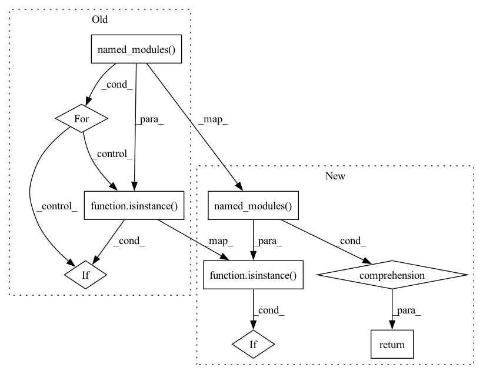

Pattern ID :32195
Before Change
layers = []
for name, mod in module.named_modules():
if isinstance( mod, Linear) or isinstance(mod, _ConvNd):
layers.append((name, mod))
return layersAfter Change
:return: a list containing the names and modules of the prunable layers
(Linear, ConvNd)
return [
(name, mod)
for (name, mod) in module.named_modules()
if (
isinstance(mod, Linear)
or isinstance(mod, _ConvNd)
or (QATLinear and isinstance(mod, QATLinear))
or (QATConv2d and isinstance(mod, QATConv2d))
or (QATConv3d and isinstance(mod, QATConv3d))
)
]
def get_quantizable_layers(module: Module) -> List[Tuple[str, Module]]:In pattern: SUPERPATTERN
Frequency: 3
Non-data size: 9
Instances Fragment ID: 94134632
Project Name: neuralmagic/sparseml
Commit Name: 8f4012ea6cba89ce75c296ec7d4a9f3e5f2e40ca
Time: 2022-02-02
Author: mark@neuralmagic.com
File Name: src/sparseml/pytorch/utils/helpers.py
M Class Name: AnonimousClass
N Class Name: AnonimousClass
M Method Name: get_prunable_layers(1)
N Method Name: get_prunable_layers(1)
M Parent Class:
N Parent Class:
M File Name: src/sparseml/pytorch/utils/helpers.py
N File Name: src/sparseml/pytorch/utils/helpers.py
M Start Line: 754
M End Line: 760
N Start Line: 763
N End Line: 773
Before Change
convs = {}
for name, mod in module.named_modules():
if isinstance( mod, _ConvNd) :
convs[name] = mod
return convsAfter Change
:param module: the module to grab all conv layers for
:return: a list of all the conv layers in the module
return {
name: mod for name, mod in module.named_modules() if isinstance( mod, _ConvNd)
}
def get_linear_layers(module: Module) -> Dict[str, Module]: Fragment ID: 94134634
Project Name: neuralmagic/sparseml
Commit Name: 23b37a7c38f6219cf0d77cc338190b7348a25337
Time: 2022-03-10
Author: 29055749+zjzh@users.noreply.github.com
File Name: src/sparseml/pytorch/utils/helpers.py
M Class Name: AnonimousClass
N Class Name: AnonimousClass
M Method Name: get_conv_layers(1)
N Method Name: get_conv_layers(1)
M Parent Class:
N Parent Class:
M File Name: src/sparseml/pytorch/utils/helpers.py
N File Name: src/sparseml/pytorch/utils/helpers.py
M Start Line: 739
M End Line: 745
N Start Line: 739
N End Line: 741
Before Change
linears = {}
for name, mod in module.named_modules():
if isinstance( mod, Linear) :
linears[name] = mod
return linearsAfter Change
:param module: the module to grab all linear layers for
:return: a list of all linear layers in the module
return {
name: mod for name, mod in module.named_modules() if isinstance( mod, Linear)
}
def get_prunable_layers(module: Module) -> List[Tuple[str, Module]]: Fragment ID: 94134631
Project Name: neuralmagic/sparseml
Commit Name: 23b37a7c38f6219cf0d77cc338190b7348a25337
Time: 2022-03-10
Author: 29055749+zjzh@users.noreply.github.com
File Name: src/sparseml/pytorch/utils/helpers.py
M Class Name: AnonimousClass
N Class Name: AnonimousClass
M Method Name: get_linear_layers(1)
N Method Name: get_linear_layers(1)
M Parent Class:
N Parent Class:
M File Name: src/sparseml/pytorch/utils/helpers.py
N File Name: src/sparseml/pytorch/utils/helpers.py
M Start Line: 753
M End Line: 759
N Start Line: 749
N End Line: 751